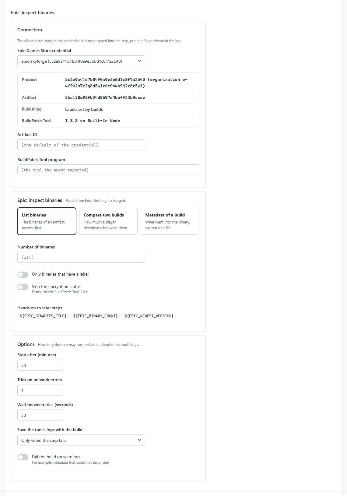

Epic: inspect binaries
Read from Epic: list the binaries of an artifact, compare two builds, or save the metadata of a build. Nothing is changed.
When to use it
Use it to find the newest version, to check how large an update will be for players, or to keep a record of what went into a build. It only reads, so it is safe to run at any time.
Every Epic step runs the Epic BuildPatch Tool on the agent. The agent needs the tool: see Install BuildPatch Tool. A step that needs a newer tool than the agent has stops with a message that names the version the agent has.
How to set it up
- Open the build configuration, then Settings › Build steps › Add build step.
- Type
Epicin Filter step types and click Epic: inspect binaries. - Pick the credential.
- Choose a card under What to do: List binaries, Compare two builds or Metadata of a build, and fill in its fields.
- Click Save.

Every field
Connection
| Field | What it does | Default | Example |
|---|---|---|---|
| Epic Games Store credential | The credential that holds your BuildPatch Tool keys. The list shows the credentials you may use. The secret is never typed in the step, never written to a file and never shown in the log. | None. The step fails if you pick nothing. | Epic Store (Skyforge) |
| Artifact ID | The Epic artifact to work on. Leave it empty to use the Default artifact ID of the credential. | Empty (the credential default) | 0f2b8a6c9d1e4c37a5e8b1d6c2f94a70 |
| BuildPatch Tool program | The full path of the BuildPatch Tool program on the agent. Leave it empty to use the tool the agent reported. | Empty (the tool the agent reported) | D:/Tools/BuildPatchTool/BuildPatchTool.exe |
List binaries
The binaries of an artifact, newest first.
| Field | What it does | Default | Example |
|---|---|---|---|
| Number of binaries | How many binaries to list. Must be a whole number. Empty lists all. | Empty (all) | 10 |
| Only binaries that have a label | Leaves out binaries with no label. | Off | On |
| Skip the encryption status | Faster. Needs BuildPatch Tool 1.8.6. | Off | Off |
It hands on ${EPIC_BINARIES_FILE} (the saved list, epic/binaries.json), ${EPIC_BINARY_COUNT}, ${EPIC_NEWEST_VERSION} and, when one is live, ${EPIC_LIVE_VERSION}.
Compare two builds
Shows how much a player downloads to move from one version to the other. The result is saved as epic/diff.json.
| Field | What it does | Default | Example |
|---|---|---|---|
| From version | The version players have now. | Empty | 1.3.2-Windows |
| To version | The new version. | ${EPIC_BUILD_VERSION} | 1.4.57-Windows |
| Install tags of the from version | Compare only files that have these tags. | Empty (all files) | movies |
| Install tags of the to version | The same for the new version. | Empty (all files) | movies |
| Compare tag sets | One comma list of tags per line. Two quote marks ("") stand for the files that have no tag. | Empty | movies,music |
| Fail when no optimised update exists | Fails the step when Epic has no optimised update for the pair. Needs BuildPatch Tool 1.8.8. Without it, Epic gives plain statistics. | Off | On |
It hands on ${EPIC_DIFF_FILE}.
Metadata of a build
What went into a binary, written to a file.
| Field | What it does | Default | Example |
|---|---|---|---|
| Version | The version to read. | ${EPIC_BUILD_VERSION} | 1.4.57-Windows |
| Format | JSON or Text (human form). | JSON | JSON |
| Encoding | UTF-8 or UTF-16. | UTF-8 | UTF-8 |
It hands on ${EPIC_METADATA_FILE}, a build artifact.
Options
| Field | What it does | Default | Example |
|---|---|---|---|
| Stop after (minutes) | The step is stopped after this time. | 30 | 30 |
| Tries on network errors | How many times the step runs BuildPatch Tool when it fails because of a network problem. A wrong key or a missing permission is never tried again. | 1 | 3 |
| Wait between tries (seconds) | The pause between two tries. | 30 | 60 |
| Save the tool’s logs with the build | Whether the logs BuildPatch Tool wrote on the agent are kept as build artifacts in epic-logs. Choices: Only when the step fails, Always, Never. | Only when the step fails | Always |
| Fail the build on warnings | Fails the step when BuildPatch Tool gave warnings, for example when metadata could not be written. Without it, warnings only show in the log. | Off | On |
A worked example
Before a release, a build runs Compare two builds with From version 1.3.2-Windows (the live one) and To version left as ${EPIC_BUILD_VERSION}, with Fail when no optimised update exists on. The build fails if the optimise step was forgotten.
What you see when it runs
Epic: credential Epic Store (Skyforge), product 8c1d5f, artifact 0f2b8a..., Publishing: Labels set by builds Epic: 12 binaries, newest first: Epic: 1.4.57-Windows Epic: 1.4.56-Windows Epic: 1.3.2-Windows (Live) Epic: ... 9 more in epic/binaries.json Epic: Step output EPIC_BINARY_COUNT = 12
The list shows 20 binaries in the log. The rest is in epic/binaries.json under Artifacts.
Problems and fixes
| Message | What to do |
|---|---|
| The number of binaries must be a whole number | Type digits only, or leave it empty. |
| Both versions are the same. The comparison has nothing to show. | Choose two different versions. |
| The list could not be read as a JSON array | The log shows the raw text. Run again, and check that the tool is a current version. |
| An option needs a newer tool | Update the tool with Install BuildPatch Tool. |